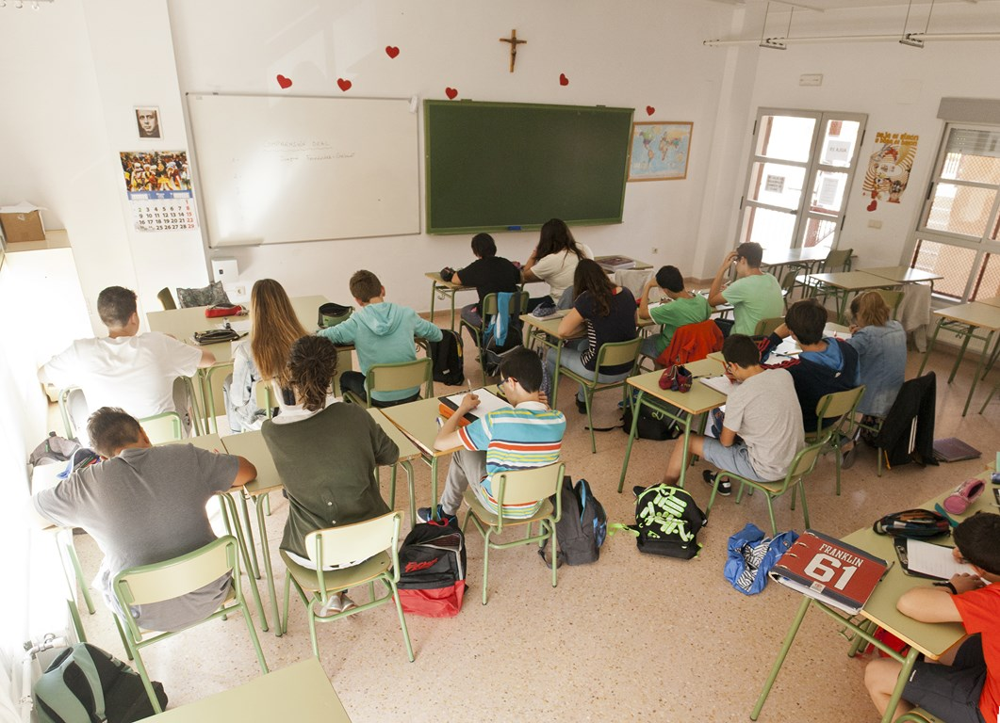

ESO
La Educación Secundaria Obligatoria ofrece una formación completa y dinámica para preparar a los
alumnos tanto académica como personalmente. A través de metodologías modernas y actividades
prácticas, fomentamos el pensamiento crítico, el trabajo en equipo y el desarrollo de
habilidades esenciales para el futuro.
Nuestro profesorado acompaña a cada estudiante de
forma cercana, ayudándolo a mejorar su rendimiento y potenciar sus capacidades. Además de las
asignaturas principales, los alumnos participan en proyectos innovadores, actividades culturales
y experiencias educativas que enriquecen su aprendizaje diario.
